4．希尔伯特的直接继承者
希尔伯特在积分方程方面的工作，被施密特（Erhard Schmidt，1876—1959）简化了。施密特在德国几所大学担任过教授。他用的方法是施瓦茨在位势理论中创立的。他最有意义的贡献是在1907年把特征函数的概念推广到带非对称核的积分方程(17)。
里斯（Friedrich Riesz，1880—1956）是匈牙利的数学教授，他在1907年继续了希尔伯特的工作(18)。希尔伯特曾经讨论过形如
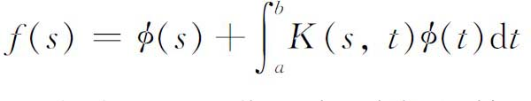
的积分方程，其中f和K是连续的。里斯要把希尔伯特的思想推广到更一般的函数f（s）。为此必须肯定，相对于给定的标准正交函数序列
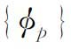
，能够确定f的“傅里叶”系数。他还有兴趣于发现，在什么情况下，一个给定的数列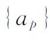
能够是某一个函数f关于已知标准正交序列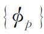
的傅里叶系数。里斯引进了平方是勒贝格可积的函数，并得到了下面的定理：令
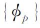
是定义在区间［a，b］上的勒贝格平方可积的、标准正交的函数序列。如果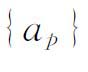
是一实数序列，那么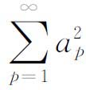
收敛是存在一个函数f使得对于每个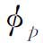
和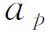
，成立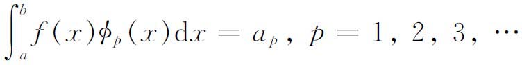
的充分必要条件。函数f实际上是勒贝格平方可积的；而且在｛ap｝完备的情况下，这样的f（在几乎处处相等的两个函数不加区别的意义下）还是唯一的。这个定理，通过任一组勒贝格平方可积的完备的标准正交函数序列，在勒贝格平方可积函数集合与平方可和序列集合之间，建立起一个一一对应。
随着勒贝格可积函数的引进，里斯还有可能在很宽的条件下，证明第二类积分方程
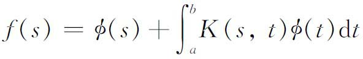
是可解的，这条件就是f（s）与K（s，t）勒贝格平方可积。除了一个在［a，b］上勒贝格积分为0的函数外，解是唯一的。
在里斯发表他的第一篇文章的同一年，科隆（Cologne）大学教授费希尔（Ernst Fischer，1875—1959）引进了平均收敛的概念(19)。定义在区间［a，b］上的函数序列｛fn｝称为平均收敛的，如果
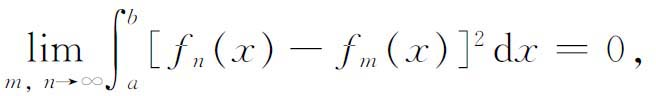
而称｛fn｝平均收敛到f，如果
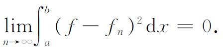
这里的积分是勒贝格积分。函数f是唯一确定的，如果允许差一个定义在测度为0的集合上的函数，或者说差一个被称为零函数的
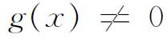
，它满足条件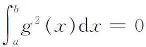
。在区间［a，b］上勒贝格平方可积函数的集合后来记为L2（a，b），或简记为L2。费希尔的主要结果是说，L2（a，b）在平均收敛意义下是完备的，也就是说，如果fn属于L2，并且｛fn｝平均收敛，那么在L2（a，b）中存在一个函数f，使得｛fn｝平均收敛到f。这种完备性是平方可和函数的主要优点。由此作为一个推论，费希尔推出上述里斯定理，这个结果就是人们所熟悉的里斯-费希尔定理。在一篇后记(20)中，费希尔强调勒贝格平方可积函数的运用是本质的。没有更小的函数集合可用。
所谓矩量（moment）问题是指，确定一个函数f（x），使它关于给定的标准正交系｛gn｝具有给定的傅里叶系数
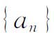
，或者说，确定一个函数f，使它满足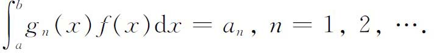
这个问题在里斯1907年的文章中已经提了出来（说的自然是勒贝格积分）。里斯在1910年(21)试图推广这个问题。因为在这个新的研究工作中，里斯用了赫尔德不等式
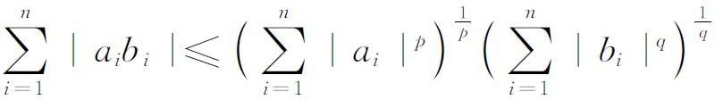
和
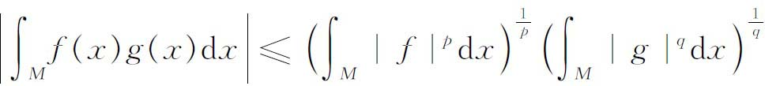
（其中
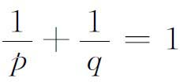
），以及另外的不等式，他不得不引进在集合M上可测的函数f的集合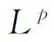
，对于它们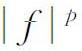
是在M上勒贝格可积的。他的第一个主要定理是：如果函数h（x）对于Lp中的每一个f都使得乘积f（x）h（x）是可积的，那么h是属于Lq的；反过来，Lp的一个函数与Lq的一个函数的乘积永远是（勒贝格）可积的。在这里自然要求p＞1并且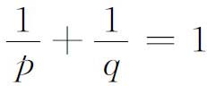
．里斯还引入了强收敛和弱收敛的概念。函数序列｛fn｝称为是强收敛到f（p阶平均），如果
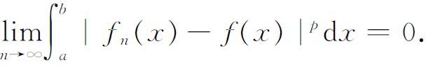
序列｛fn｝称为是弱收敛到f，如果
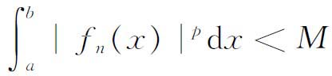
（M与n无关），并且对于［a，b］中的每一个x都有
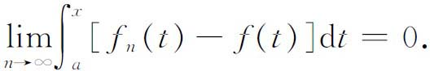
强收敛隐含弱收敛。（弱收敛的近代定义是：如果
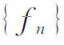
属于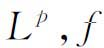
属于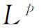
，并且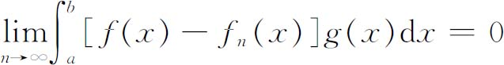
对于Lq中的每一个g成立，就说｛fn｝弱收敛到f。这是和里斯的定义等价的。）
里斯在1910年的同一篇文章中，把积分方程
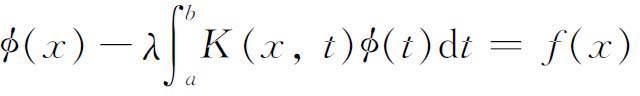
的理论推广到已知的f和未知的φ都是Lp函数的情形。这个积分方程特征值问题解的结果和希尔伯特的结果相类似，更加引人注意的却是，里斯为了实现这项工作，引入了算子（operator）的抽象概念，并对它明确地陈述了希尔伯特的全连续概念，而且建立了抽象的算子理论。我们将在下一章更多地谈到这种抽象的趋向。在其他的结果中，里斯证明了L2中实的全连续算子的连续谱是空的。